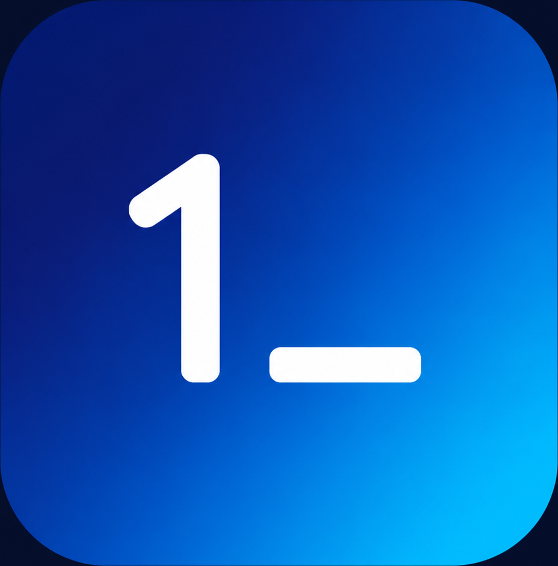

更适合和 Agent 时间线绑在一起，形成真正的“执行历史”。

1ShellNightshift Deck
Manual 审批deepseek-v4-pro3 个活跃会话
NIGHT OPERATIONS
更偏值守和执行的 1Shell 指挥台
如果你想让 Agent、终端、审批和工具调用更有“正在执行”的压迫感，这套会比现在的浅色空白页更像值班控制面。
香港节点巡检完成
配置写入待确认
审计回放已生成
MCP 注册表同步
Agent 时间线
把对话、工具调用、审批、回放放进同一条执行链，而不是拆成几块互相弱关联的区域。
21:08
读取探针趋势probe host example-hk --window 15m
完成21:09
生成修复脚本draft nginx repair plan
执行中21:11
申请写入配置write_remote_file /etc/nginx/nginx.conf
待审批Agent Terminaltimeline | tools | files | replay
$ 1shell ask_1shell_ai "诊断香港节点 IO 波动" analysis: suspect nginx access log burst + low free inode cache $ host_exec example-hk "df -h && iostat -x 1 3" disk /dev/vda1 48% used · await 1.9ms · util 32% $ write_remote_file /etc/nginx/nginx.conf approval required before external side effect suggestion: create backup and reload on single host first
把高风险动作独立突出，不要埋进普通按钮区。
状态、来源、目标主机和动作种类一眼就能扫出来。
整套视觉更偏低亮环境，但没有牺牲信息密度和可读性。